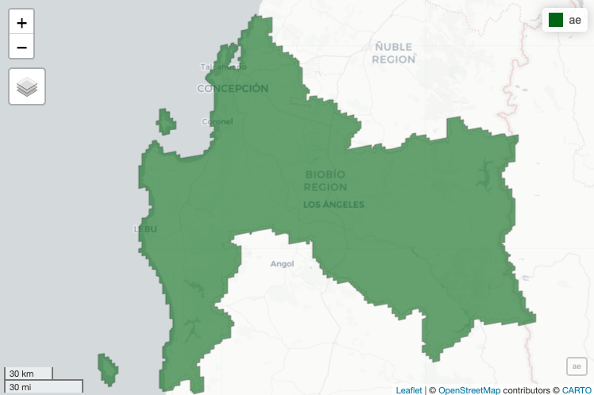

| Value | Color | Description |
|---|---|---|
| 0 | #1c0dff | Water Bodies: at least 60% of area is covered by permanent water bodies. |
| 1 | #05450a | Evergreen Needleleaf Forests: dominated by evergreen conifer trees (canopy >2m). Tree cover >60%. |
| 2 | #086a10 | Evergreen Broadleaf Forests: dominated by evergreen broadleaf and palmate trees (canopy >2m). Tree cover >60%. |
| 3 | #54a708 | Deciduous Needleleaf Forests: dominated by deciduous needleleaf (larch) trees (canopy >2m). Tree cover >60%. |
| 4 | #78d203 | Deciduous Broadleaf Forests: dominated by deciduous broadleaf trees (canopy >2m). Tree cover >60%. |
| 5 | #009900 | Mixed Forests: dominated by neither deciduous nor evergreen (40-60% of each) tree type (canopy >2m). Tree cover >60%. |
| 6 | #c6b044 | Closed Shrublands: dominated by woody perennials (1-2m height) >60% cover. |
| 7 | #dcd159 | Open Shrublands: dominated by woody perennials (1-2m height) 10-60% cover. |
| 8 | #dade48 | Woody Savannas: tree cover 30-60% (canopy >2m). |
| 9 | #fbff13 | Savannas: tree cover 10-30% (canopy >2m). |
| 10 | #b6ff05 | Grasslands: dominated by herbaceous annuals ( |
| 11 | #27ff87 | Permanent Wetlands: permanently inundated lands with 30-60% water cover and >10% vegetated cover. |
| 12 | #c24f44 | Croplands: at least 60% of area is cultivated cropland. |
| 13 | #a5a5a5 | Urban and Built-up Lands: at least 30% impervious surface area including building materials, asphalt and vehicles. |
| 14 | #ff6d4c | Cropland/Natural Vegetation Mosaics: mosaics of small-scale cultivation 40-60% with natural tree, shrub, or herbaceous vegetation. |
| 15 | #f9ffa4 | Non-Vegetated Lands: at least 60% of area is non-vegetated barren (sand, rock, soil) or permanent snow and ice with less than 10% vegetation. |
Appendix B — Cobertura de Suelo MODIS
Procedimiento adquisión de producto a nivel regional
B.1 Objetivos
El presente título tiene como objetivo documentar los pasos para la adquisición del producto satelital MCD12Q1.061 MODIS Land Cover Type Yearly Global 500m que contiene las diferentes coberturas de suelo a nivel mundial, filtrar por año y región de estudio y guardar los resultados en en el formato correcto para ser utilizado como producto válido.
B.2 Metodología
De forma general se utilizará como base producto producto de datos MCD12Q1 Versión 6.1 del Moderate Resolution Imaging Spectroradiometer (MODIS) combinado Terra y Aqua proporciona cobertura terrestre a intervalos anuales a nivel global.
Se definirá una región de estudio, para el caso práctico de cálculo corresponde a la región del Bío Bío y año de análisis el 2016 que corresponde al periodo de levantamiento de información del Pre Censo.
Posteriormente se accederá el producto de datos filtrará por año y región de estudio, además se realizarán correcciones y transformaciones que permitan homologar en estructura raster con los demás productos satelitales del proyecto.
B.3 Producto de Datos
- Nombre:
- Disponibilidad (a Mayo 2023):
- 2001-01-01T00:00:00Z–2021-01-01T00:00:00
Proveedor: E : NASA LP DAAC at the USGS EROS Center
- Descripción:
-
Imágenes compuestas de radiancia media mensual utilizando datos nocturnos del Visible Infrared Imaging Radiometer Suite (VIIRS) Day/Night Band (DNB).
El producto de datos MCD12Q1 Versión 6.1 del Moderate Resolution Imaging Spectroradiometer (MODIS) combinado Terra y Aqua proporciona cobertura terrestre a intervalos anuales a nivel global. El producto de datos MCD12Q1 Versión 6.1 se obtiene mediante clasificaciones supervisadas de los datos de reflectancia MODIS Terra y Aqua. Los tipos de cobertura terrestre se derivan de los esquemas de clasificación del Programa Internacional de la Geosfera y la Biosfera (IGBP), el Índice de Superficie Foliar (LAI) de la Universidad de Maryland (UMD), los Ciclos Biogeoquímicos BIOME (BGC) y los Tipos Funcionales de Plantas (PFT). A continuación, las clasificaciones supervisadas se sometieron a un postprocesamiento adicional que incorporaba conocimientos previos e información auxiliar para refinar aún más las clases específicas. El Sistema de Clasificación de la Cubierta Terrestre (LCCS) de la Organización de las Naciones Unidas para la Agricultura y la Alimentación (FAO) proporciona capas adicionales de evaluación de las propiedades de la cubierta terrestre para la cubierta terrestre, el uso del suelo y la hidrología de superficie.
También se proporcionan capas para el tipo de cubierta terrestre 1-5, la propiedad de la cubierta terrestre 1-3, la evaluación de la propiedad de la cubierta terrestre 1-3, el control de calidad de la cubierta terrestre (QC) y una máscara de agua terrestre.
Referencias: Guía de Uso - Documentación General - Documento Teórico Básico del Algoritmo (ATBD)
- Resolution Espacial:
- 500 metros
Bandas:
Para el estudio que se lleva a cabo se necesita la clasificación de uso de suelo realizada por la Universidad de Maryland, que es un producto anual que tiene el siguiente nombre LC_Type2 “Land Cover Type 2: Annual University of Maryland (UMD) classification”, a continuación en la tabla se detalla cada una de sus tipos de uso de suelo que se entregan.
Bandas: LC_Type2 Class Table
Para el caso de investigación se utilizará el producto “LC_Type2 Class Table” que contiene la siguiente información.
A continuación se presenta los pasos detallados en el proceso de captura y producción del producto de datos correspondiente a la Cobertura de Uso de Suelo, para lo anterior también utilizará la plataforma de Goole Earth Engine a través de la librería llamada Rgee.
B.4 Recursos y parámetros generales
Pimeramente se definen librerías y parámetros generales de uso a lo largo del presente presente:
# Recursos ----------------------------------------------------------------
source("R/fnc_gee.R")
source("R/fnc_grals.R")
# Librerias ---------------------------------------------------------------
library(dplyr)
library(sf)
library(raster)
library(mapview)
library(ggplot2)
library(viridis)# Parámetros --------------------------------------------------------------
year = 2016
n_region = "08"
description_d = "Landcover_T2"
folder_name_d = "LANDCOVER_T2"
path_out = "data/tif"
scale_r = 500
scale_r_out = 100
out_name = paste0(path_out, "/R", n_region,"_",
description_d, "_", year, "_",
scale_r_out, ".tif")B.5 Definición de Área de Estudio
# Región de Estudio -------------------------------------------------------
region_sf <- readRDS("../../insumos/regiones/Regiones_Chile.rds") %>%
filter(REGION == n_region) %>%
st_transform(4326)La región de estudio es geometría única y se le aplicará un buffer (st_buffer()) de 1000 metros, a fin de asegurarnos que no queden partes de polígonos sin cubrir con el raster.
ae <- region_sf %>%
select(geometry) %>%
st_buffer(1000)
mapview(ae, col.region = "darkgreen")
Finalmente la región de estudio se transforma de formato objeto ee (earth engine) para que pueda interactuar con esa plataforma.
ae_ee <- ae %>% sf_as_ee()B.6 Producto de Datos
library(rgee)
email_gee = 'denis.berroeta@gmail.com'
ee_Initialize(email_gee, drive = TRUE)dataset = ee$ImageCollection('MODIS/061/MCD12Q1')
land_cove_t2 = dataset$select('LC_Type2')$
filter(ee$Filter$calendarRange(year,year,'year'))$
first()$
clip(ae_ee)# Visualización -----------------------------------------------------------
colors_t2 <- c("#1c0dff", "#05450a", "#086a10", "#54a708",
"#78d203", "#009900", "#c6b044", "#dcd159",
"#dade48", "#fbff13", "#b6ff05", "#27ff87",
"#c24f44", "#a5a5a5", "#ff6d4c", "#f9ffa4")
vis <- list(min = 0, max = 15, palette = colors_t2)
Map$centerObject(ae_ee, zoom = 8)
Map$addLayer(land_cove_t2, vis, name = "LC_Type2") B.7 Descarga de Raster
img <- dl_image(image_ee = land_cove_t2, roi = region_sf,
year = year, n_region = n_region,
description_d = description_d,
folder_name_d = folder_name_d,
path_out = path_out,
scale_r = scale_r)
raster_lc_t2 <- raster(img$dsn)B.8 Ajuste Resolución
# Ajuste resolución -------------------------------------------------------
# reproject
cp_r <- raster_lc_t2
crs_utm <- "+proj=utm +zone=19 +south +datum=WGS84 +units=m +no_defs"
if(crs(raster_lc_t2)@projargs != crs_utm){
cp_r <- projectRaster(raster_lc_t2, crs = crs_utm)
}
# copia raster
r <- cp_r
res(r) <- scale_r_out
s <- raster::resample(cp_r, r, method = "bilinear")
s <- round(s)
s[s<0] = 0
# writeRaster(s, filename = out_name, overwrite=TRUE)
# mapview(s, col.regions =colors_t2)B.9 Visualización de resultados
s <- raster(out_name)
s <- factorValues(s, i)
levels(s) <- as.character(0:15)
# rastero to df (na omit)
lc_raw <- raster::as.data.frame(s, xy = TRUE) %>% na.omit()
names(lc_raw)[3] <- "layer"
map_lc <- ggplot() +
geom_tile(data = lc_raw ,
aes(x = x, y = y,
fill = as.character(layer))) +
scale_fill_manual(name = "LC_t2", values = colors_t2,
breaks = as.character(0:15)
)+
coord_equal()+
ggtitle(paste0("R08: Land Cover T2") ) +
theme_bw() +
theme(panel.grid.major = element_line(colour = "gray80"),
panel.grid.minor = element_line(colour = "gray80"))
map_lc
# ggsave(plot = map_lc,filename = "images/R08_landcover_t2.png")